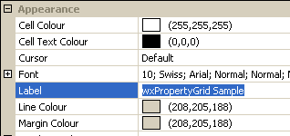
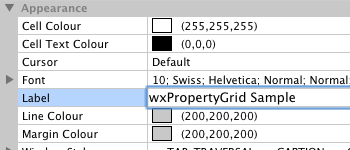

| Version: 2.9.4 |
#include </home/zeitlin/src/wx/github/interface/wx/propgrid/propgrid.h>
 Inheritance diagram for wxPropertyGrid:
Inheritance diagram for wxPropertyGrid:wxPropertyGrid is a specialized grid for editing properties - in other words name = value pairs.
List of ready-to-use property classes include strings, numbers, flag sets, fonts, colours and many others. It is possible, for example, to categorize properties, set up a complete tree-hierarchy, add more than two columns, and set arbitrary per-property attributes.
Please note that most member functions are inherited and as such not documented on this page. This means you will probably also want to read wxPropertyGridInterface class reference.
See also wxPropertyGrid Overview.
See wxPropertyGrid Window Styles.
To process input from a property grid control, use these event handler macros to direct input to member functions that take a wxPropertyGridEvent argument.
The following event handler macros redirect the events to member function handlers 'func' with prototypes like:
Event macros for events emitted by this class:
wxEVT_PG_SELECTED event, generated when a property selection has been changed, either by user action or by indirect program function. For instance, collapsing a parent property programmatically causes any selected child property to become unselected, and may therefore cause this event to be generated. wxEVT_PG_CHANGED event, generated when property value has been changed by the user. wxEVT_PG_CHANGING event, generated when property value is about to be changed by user. Use wxPropertyGridEvent::GetValue() to take a peek at the pending value, and wxPropertyGridEvent::Veto() to prevent change from taking place, if necessary. wxEVT_PG_HIGHLIGHTED event, which occurs when mouse moves over a property. Event's property is NULL if hovered area does not belong to any property. wxEVT_PG_RIGHT_CLICK event, which occurs when property is clicked on with right mouse button. wxEVT_PG_DOUBLE_CLICK event, which occurs when property is double-clicked on with left mouse button. wxEVT_PG_ITEM_COLLAPSED event, generated when user collapses a property or category. wxEVT_PG_ITEM_EXPANDED event, generated when user expands a property or category. wxEVT_PG_LABEL_EDIT_BEGIN event, generated when user is about to begin editing a property label. You can veto this event to prevent the action. wxEVT_PG_LABEL_EDIT_ENDING event, generated when user is about to end editing of a property label. You can veto this event to prevent the action. wxEVT_PG_COL_BEGIN_DRAG event, generated when user starts resizing a column - can be vetoed. wxEVT_PG_COL_DRAGGING, event, generated when a column resize by user is in progress. This event is also generated when user double-clicks the splitter in order to recenter it. wxEVT_PG_COL_END_DRAG event, generated after column resize by user has finished. |  |  |  |
| wxMSW appearance | wxGTK appearance | wxMac appearance |
Public Member Functions | |
| wxPropertyGrid () | |
| Two step constructor. | |
| wxPropertyGrid (wxWindow *parent, wxWindowID id=wxID_ANY, const wxPoint &pos=wxDefaultPosition, const wxSize &size=wxDefaultSize, long style=wxPG_DEFAULT_STYLE, const wxString &name=wxPropertyGridNameStr) | |
| Constructor. | |
| virtual | ~wxPropertyGrid () |
| Destructor. | |
| void | AddActionTrigger (int action, int keycode, int modifiers=0) |
| Adds given key combination to trigger given action. | |
| bool | AddToSelection (wxPGPropArg id) |
| Adds given property into selection. | |
| void | BeginLabelEdit (unsigned int colIndex=0) |
| Creates label editor wxTextCtrl for given column, for property that is currently selected. | |
| bool | ChangePropertyValue (wxPGPropArg id, wxVariant newValue) |
| Changes value of a property, as if from an editor. | |
| void | CenterSplitter (bool enableAutoResizing=false) |
| Centers the splitter. | |
| virtual void | Clear () |
| Deletes all properties. | |
| void | ClearActionTriggers (int action) |
| Clears action triggers for given action. | |
| virtual bool | CommitChangesFromEditor (wxUint32 flags=0) |
| Forces updating the value of property from the editor control. | |
| bool | Create (wxWindow *parent, wxWindowID id=wxID_ANY, const wxPoint &pos=wxDefaultPosition, const wxSize &size=wxDefaultSize, long style=wxPG_DEFAULT_STYLE, const wxString &name=wxPropertyGridNameStr) |
| Two step creation. | |
| void | DedicateKey (int keycode) |
| Dedicates a specific keycode to wxPropertyGrid. | |
| bool | EnableCategories (bool enable) |
| Enables or disables (shows/hides) categories according to parameter enable. | |
| void | EndLabelEdit (bool commit=true) |
| Destroys label editor wxTextCtrl, if any. | |
| bool | EnsureVisible (wxPGPropArg id) |
| Scrolls and/or expands items to ensure that the given item is visible. | |
| wxSize | FitColumns () |
| Reduces column sizes to minimum possible, while still retaining fully visible grid contents (labels, images). | |
| wxTextCtrl * | GetLabelEditor () const |
| Returns currently active label editor, NULL if none. | |
| wxWindow * | GetPanel () |
| Returns wxWindow that the properties are painted on, and which should be used as the parent for editor controls. | |
| wxColour | GetCaptionBackgroundColour () const |
| Returns current category caption background colour. | |
| wxFont & | GetCaptionFont () |
| Returns current category caption font. | |
| wxColour | GetCaptionForegroundColour () const |
| Returns current category caption text colour. | |
| wxColour | GetCellBackgroundColour () const |
| Returns current cell background colour. | |
| wxColour | GetCellDisabledTextColour () const |
| Returns current cell text colour when disabled. | |
| wxColour | GetCellTextColour () const |
| Returns current cell text colour. | |
| unsigned int | GetColumnCount () const |
| Returns number of columns currently on grid. | |
| wxColour | GetEmptySpaceColour () const |
| Returns colour of empty space below properties. | |
| int | GetFontHeight () const |
| Returns height of highest characters of used font. | |
| wxPropertyGrid * | GetGrid () |
| Returns pointer to itself. | |
| wxRect | GetImageRect (wxPGProperty *property, int item) const |
| Returns rectangle of custom paint image. | |
| wxSize | GetImageSize (wxPGProperty *property=NULL, int item=-1) const |
| Returns size of the custom paint image in front of property. | |
| wxPGProperty * | GetLastItem (int flags=wxPG_ITERATE_DEFAULT) |
| Returns last item which could be iterated using given flags. | |
| wxColour | GetLineColour () const |
| Returns colour of lines between cells. | |
| wxColour | GetMarginColour () const |
| Returns background colour of margin. | |
| wxPGProperty * | GetRoot () const |
| Returns "root property". | |
| int | GetRowHeight () const |
| Returns height of a single grid row (in pixels). | |
| wxPGProperty * | GetSelectedProperty () const |
| Returns currently selected property. | |
| wxPGProperty * | GetSelection () const |
| Returns currently selected property. | |
| wxColour | GetSelectionBackgroundColour () const |
| Returns current selection background colour. | |
| wxColour | GetSelectionForegroundColour () const |
| Returns current selection text colour. | |
| wxPGSortCallback | GetSortFunction () const |
| Returns the property sort function (default is NULL). | |
| int | GetSplitterPosition (unsigned int splitterIndex=0) const |
| Returns current splitter x position. | |
| wxTextCtrl * | GetEditorTextCtrl () const |
| Returns wxTextCtrl active in currently selected property, if any. | |
| const wxPGCell & | GetUnspecifiedValueAppearance () const |
| Returns current appearance of unspecified value cells. | |
| wxString | GetUnspecifiedValueText (int argFlags=0) const |
| Returns (visual) text representation of the unspecified property value. | |
| int | GetVerticalSpacing () const |
| Returns current vertical spacing. | |
| wxPropertyGridHitTestResult | HitTest (const wxPoint &pt) const |
| Returns information about arbitrary position in the grid. | |
| bool | IsAnyModified () const |
| Returns true if any property has been modified by the user. | |
| bool | IsEditorFocused () const |
| Returns true if a property editor control has focus. | |
| bool | IsFrozen () const |
| Returns true if updating is frozen (ie. | |
| void | MakeColumnEditable (unsigned int column, bool editable=true) |
| Makes given column editable by user. | |
| void | OnTLPChanging (wxWindow *newTLP) |
| It is recommended that you call this function any time your code causes wxPropertyGrid's top-level parent to change. | |
| void | RefreshEditor () |
| Refreshes any active editor control. | |
| virtual void | RefreshProperty (wxPGProperty *p) |
| Redraws given property. | |
| void | ResetColours () |
| Resets all colours to the original system values. | |
| void | ResetColumnSizes (bool enableAutoResizing=false) |
| Resets column sizes and splitter positions, based on proportions. | |
| bool | RemoveFromSelection (wxPGPropArg id) |
| Removes given property from selection. | |
| bool | SelectProperty (wxPGPropArg id, bool focus=false) |
| Selects a property. | |
| void | SetCaptionBackgroundColour (const wxColour &col) |
| Sets category caption background colour. | |
| void | SetCaptionTextColour (const wxColour &col) |
| Sets category caption text colour. | |
| void | SetCellBackgroundColour (const wxColour &col) |
| Sets default cell background colour - applies to property cells. | |
| void | SetCellDisabledTextColour (const wxColour &col) |
| Sets cell text colour for disabled properties. | |
| void | SetCellTextColour (const wxColour &col) |
| Sets default cell text colour - applies to property name and value text. | |
| void | SetColumnCount (int colCount) |
| Set number of columns (2 or more). | |
| void | SetCurrentCategory (wxPGPropArg id) |
| Sets the 'current' category - Append will add non-category properties under it. | |
| void | SetEmptySpaceColour (const wxColour &col) |
| Sets colour of empty space below properties. | |
| void | SetLineColour (const wxColour &col) |
| Sets colour of lines between cells. | |
| void | SetMarginColour (const wxColour &col) |
| Sets background colour of margin. | |
| void | SetSelection (const wxArrayPGProperty &newSelection) |
| Set entire new selection from given list of properties. | |
| void | SetSelectionBackgroundColour (const wxColour &col) |
| Sets selection background colour - applies to selected property name background. | |
| void | SetSelectionTextColour (const wxColour &col) |
| Sets selection foreground colour - applies to selected property name text. | |
| void | SetSortFunction (wxPGSortCallback sortFunction) |
| Sets the property sorting function. | |
| void | SetSplitterPosition (int newxpos, int col=0) |
| Sets x coordinate of the splitter. | |
| void | SetSplitterLeft (bool privateChildrenToo=false) |
| Moves splitter as left as possible, while still allowing all labels to be shown in full. | |
| void | SetUnspecifiedValueAppearance (const wxPGCell &cell) |
| Sets appearance of value cells representing an unspecified property value. | |
| void | SetVerticalSpacing (int vspacing) |
| Sets vertical spacing. | |
wxPropertyGrid customization | |
Reimplement these member functions in derived class for better control over wxPropertyGrid behaviour. | |
| virtual void | DoShowPropertyError (wxPGProperty *property, const wxString &msg) |
| Override in derived class to display error messages in custom manner (these message usually only result from validation failure). | |
| virtual void | DoHidePropertyError (wxPGProperty *property) |
| Override in derived class to hide an error displayed by DoShowPropertyError(). | |
| virtual wxStatusBar * | GetStatusBar () |
| Return wxStatusBar that is used by this wxPropertyGrid. | |
Property development functions | |
These member functions are usually only called when creating custom user properties. | |
| void | EditorsValueWasModified () |
| Call when editor widget's contents is modified. | |
| void | EditorsValueWasNotModified () |
| Reverse of EditorsValueWasModified(). | |
| wxVariant | GetUncommittedPropertyValue () |
| Returns most up-to-date value of selected property. | |
| bool | IsEditorsValueModified () const |
| Returns true if editor's value was marked modified. | |
| void | ShowPropertyError (wxPGPropArg id, const wxString &msg) |
| Shows an brief error message that is related to a property. | |
| bool | WasValueChangedInEvent () const |
| You can use this member function, for instance, to detect in wxPGProperty::OnEvent() if wxPGProperty::SetValueInEvent() was already called in wxPGEditor::OnEvent(). | |
Static Public Member Functions | |
| static void | AutoGetTranslation (bool enable) |
| This static function enables or disables automatic use of wxGetTranslation() for following strings: wxEnumProperty list labels, wxFlagsProperty child property labels. | |
| static wxPGEditor * | RegisterEditorClass (wxPGEditor *editor, bool noDefCheck=false) |
| Forwards to DoRegisterEditorClass with empty name. | |
| static wxPGEditor * | DoRegisterEditorClass (wxPGEditor *editor, const wxString &name, bool noDefCheck=false) |
| Registers a new editor class. | |
| wxPropertyGrid::wxPropertyGrid | ( | ) |
Two step constructor.
Call Create() when this constructor is called to build up the wxPropertyGrid
| wxPropertyGrid::wxPropertyGrid | ( | wxWindow * | parent, |
| wxWindowID | id = wxID_ANY, |
||
| const wxPoint & | pos = wxDefaultPosition, |
||
| const wxSize & | size = wxDefaultSize, |
||
| long | style = wxPG_DEFAULT_STYLE, |
||
| const wxString & | name = wxPropertyGridNameStr |
||
| ) |
Constructor.
The styles to be used are styles valid for the wxWindow.
| virtual wxPropertyGrid::~wxPropertyGrid | ( | ) | [virtual] |
Destructor.
| void wxPropertyGrid::AddActionTrigger | ( | int | action, |
| int | keycode, | ||
| int | modifiers = 0 |
||
| ) |
Adds given key combination to trigger given action.
Here is a sample code to make Enter key press move focus to the next property.
propGrid->AddActionTrigger(wxPG_ACTION_NEXT_PROPERTY, WXK_RETURN); propGrid->DedicateKey(WXK_RETURN);
| action | Which action to trigger. See wxPropertyGrid Action Identifiers. |
| keycode | Which keycode triggers the action. |
| modifiers | Which key event modifiers, in addition to keycode, are needed to trigger the action. |
| bool wxPropertyGrid::AddToSelection | ( | wxPGPropArg | id | ) |
Adds given property into selection.
If wxPG_EX_MULTIPLE_SELECTION extra style is not used, then this has same effect as calling SelectProperty().
| static void wxPropertyGrid::AutoGetTranslation | ( | bool | enable | ) | [static] |
This static function enables or disables automatic use of wxGetTranslation() for following strings: wxEnumProperty list labels, wxFlagsProperty child property labels.
Default is false.
| void wxPropertyGrid::BeginLabelEdit | ( | unsigned int | colIndex = 0 | ) |
Creates label editor wxTextCtrl for given column, for property that is currently selected.
When multiple selection is enabled, this applies to whatever property GetSelection() returns.
| colIndex | Which column's label to edit. Note that you should not use value 1, which is reserved for property value column. |
| void wxPropertyGrid::CenterSplitter | ( | bool | enableAutoResizing = false | ) |
Centers the splitter.
| enableAutoResizing | If true, automatic column resizing is enabled (only applicapple if window style wxPG_SPLITTER_AUTO_CENTER is used). |
| bool wxPropertyGrid::ChangePropertyValue | ( | wxPGPropArg | id, |
| wxVariant | newValue | ||
| ) |
Changes value of a property, as if from an editor.
Use this instead of SetPropertyValue() if you need the value to run through validation process, and also send the property change event.
Reimplemented from wxPropertyGridInterface.
| virtual void wxPropertyGrid::Clear | ( | ) | [virtual] |
Deletes all properties.
Implements wxPropertyGridInterface.
| void wxPropertyGrid::ClearActionTriggers | ( | int | action | ) |
Clears action triggers for given action.
| action | Which action to trigger. wxPropertyGrid Action Identifiers. |
| virtual bool wxPropertyGrid::CommitChangesFromEditor | ( | wxUint32 | flags = 0 | ) | [virtual] |
Forces updating the value of property from the editor control.
Note that wxEVT_PG_CHANGING and wxEVT_PG_CHANGED are dispatched using ProcessEvent, meaning your event handlers will be called immediately.
| bool wxPropertyGrid::Create | ( | wxWindow * | parent, |
| wxWindowID | id = wxID_ANY, |
||
| const wxPoint & | pos = wxDefaultPosition, |
||
| const wxSize & | size = wxDefaultSize, |
||
| long | style = wxPG_DEFAULT_STYLE, |
||
| const wxString & | name = wxPropertyGridNameStr |
||
| ) |
Two step creation.
Whenever the control is created without any parameters, use Create to actually create it. Don't access the control's public methods before this is called
Reimplemented from wxWindow.
| void wxPropertyGrid::DedicateKey | ( | int | keycode | ) |
Dedicates a specific keycode to wxPropertyGrid.
This means that such key presses will not be redirected to editor controls.
Using this function allows, for example, navigation between properties using arrow keys even when the focus is in the editor control.
| virtual void wxPropertyGrid::DoHidePropertyError | ( | wxPGProperty * | property | ) | [virtual] |
Override in derived class to hide an error displayed by DoShowPropertyError().
| static wxPGEditor* wxPropertyGrid::DoRegisterEditorClass | ( | wxPGEditor * | editor, |
| const wxString & | name, | ||
| bool | noDefCheck = false |
||
| ) | [static] |
Registers a new editor class.
| virtual void wxPropertyGrid::DoShowPropertyError | ( | wxPGProperty * | property, |
| const wxString & | msg | ||
| ) | [virtual] |
Override in derived class to display error messages in custom manner (these message usually only result from validation failure).
| void wxPropertyGrid::EditorsValueWasModified | ( | ) |
Call when editor widget's contents is modified.
For example, this is called when changes text in wxTextCtrl (used in wxStringProperty and wxIntProperty).
| void wxPropertyGrid::EditorsValueWasNotModified | ( | ) |
Reverse of EditorsValueWasModified().
| bool wxPropertyGrid::EnableCategories | ( | bool | enable | ) |
Enables or disables (shows/hides) categories according to parameter enable.
| void wxPropertyGrid::EndLabelEdit | ( | bool | commit = true | ) |
Destroys label editor wxTextCtrl, if any.
| commit | Use true (default) to store edited label text in property cell data. |
| bool wxPropertyGrid::EnsureVisible | ( | wxPGPropArg | id | ) |
Scrolls and/or expands items to ensure that the given item is visible.
| wxSize wxPropertyGrid::FitColumns | ( | ) |
Reduces column sizes to minimum possible, while still retaining fully visible grid contents (labels, images).
This function only works properly if grid size prior to call was already fairly large.
Note that you can also get calculated column widths by calling GetState->GetColumnWidth() immediately after this function returns.
| wxColour wxPropertyGrid::GetCaptionBackgroundColour | ( | ) | const |
Returns current category caption background colour.
| wxFont& wxPropertyGrid::GetCaptionFont | ( | ) |
Returns current category caption font.
| wxColour wxPropertyGrid::GetCaptionForegroundColour | ( | ) | const |
Returns current category caption text colour.
| wxColour wxPropertyGrid::GetCellBackgroundColour | ( | ) | const |
Returns current cell background colour.
| wxColour wxPropertyGrid::GetCellDisabledTextColour | ( | ) | const |
Returns current cell text colour when disabled.
| wxColour wxPropertyGrid::GetCellTextColour | ( | ) | const |
Returns current cell text colour.
| unsigned int wxPropertyGrid::GetColumnCount | ( | ) | const |
Returns number of columns currently on grid.
| wxTextCtrl* wxPropertyGrid::GetEditorTextCtrl | ( | ) | const |
Returns wxTextCtrl active in currently selected property, if any.
Takes wxOwnerDrawnComboBox into account.
| wxColour wxPropertyGrid::GetEmptySpaceColour | ( | ) | const |
Returns colour of empty space below properties.
| int wxPropertyGrid::GetFontHeight | ( | ) | const |
Returns height of highest characters of used font.
| wxPropertyGrid* wxPropertyGrid::GetGrid | ( | ) |
Returns pointer to itself.
Dummy function that enables same kind of code to use wxPropertyGrid and wxPropertyGridManager.
| wxRect wxPropertyGrid::GetImageRect | ( | wxPGProperty * | property, |
| int | item | ||
| ) | const |
Returns rectangle of custom paint image.
| property | Return image rectangle for this property. |
| item | Which choice of property to use (each choice may have different image). |
| wxSize wxPropertyGrid::GetImageSize | ( | wxPGProperty * | property = NULL, |
| int | item = -1 |
||
| ) | const |
Returns size of the custom paint image in front of property.
| property | Return image rectangle for this property. If this argument is NULL, then preferred size is returned. |
| item | Which choice of property to use (each choice may have different image). |
| wxTextCtrl* wxPropertyGrid::GetLabelEditor | ( | ) | const |
Returns currently active label editor, NULL if none.
| wxPGProperty* wxPropertyGrid::GetLastItem | ( | int | flags = wxPG_ITERATE_DEFAULT | ) |
Returns last item which could be iterated using given flags.
| flags | See wxPropertyGridIterator Flags. |
| wxColour wxPropertyGrid::GetLineColour | ( | ) | const |
Returns colour of lines between cells.
| wxColour wxPropertyGrid::GetMarginColour | ( | ) | const |
Returns background colour of margin.
| wxWindow* wxPropertyGrid::GetPanel | ( | ) |
Returns wxWindow that the properties are painted on, and which should be used as the parent for editor controls.
| wxPGProperty* wxPropertyGrid::GetRoot | ( | ) | const |
Returns "root property".
It does not have name, etc. and it is not visible. It is only useful for accessing its children.
| int wxPropertyGrid::GetRowHeight | ( | ) | const |
Returns height of a single grid row (in pixels).
| wxPGProperty* wxPropertyGrid::GetSelectedProperty | ( | ) | const |
Returns currently selected property.
| wxPGProperty* wxPropertyGrid::GetSelection | ( | ) | const |
Returns currently selected property.
Reimplemented from wxPropertyGridInterface.
| wxColour wxPropertyGrid::GetSelectionBackgroundColour | ( | ) | const |
Returns current selection background colour.
| wxColour wxPropertyGrid::GetSelectionForegroundColour | ( | ) | const |
Returns current selection text colour.
| wxPGSortCallback wxPropertyGrid::GetSortFunction | ( | ) | const |
Returns the property sort function (default is NULL).
| int wxPropertyGrid::GetSplitterPosition | ( | unsigned int | splitterIndex = 0 | ) | const |
Returns current splitter x position.
| virtual wxStatusBar* wxPropertyGrid::GetStatusBar | ( | ) | [virtual] |
Return wxStatusBar that is used by this wxPropertyGrid.
You can reimplement this member function in derived class to override the default behaviour of using the top-level wxFrame's status bar, if any.
| wxVariant wxPropertyGrid::GetUncommittedPropertyValue | ( | ) |
Returns most up-to-date value of selected property.
This will return value different from GetSelectedProperty()->GetValue() only when text editor is activate and string edited by user represents valid, uncommitted property value.
| const wxPGCell& wxPropertyGrid::GetUnspecifiedValueAppearance | ( | ) | const |
Returns current appearance of unspecified value cells.
| wxString wxPropertyGrid::GetUnspecifiedValueText | ( | int | argFlags = 0 | ) | const |
Returns (visual) text representation of the unspecified property value.
| argFlags | For internal use only. |
| int wxPropertyGrid::GetVerticalSpacing | ( | ) | const |
Returns current vertical spacing.
| wxPropertyGridHitTestResult wxPropertyGrid::HitTest | ( | const wxPoint & | pt | ) | const |
Returns information about arbitrary position in the grid.
| pt | Coordinates in the virtual grid space. You may need to use wxScrolled<T>::CalcScrolledPosition() for translating wxPropertyGrid client coordinates into something this member function can use. |
Reimplemented from wxWindow.
| bool wxPropertyGrid::IsAnyModified | ( | ) | const |
Returns true if any property has been modified by the user.
| bool wxPropertyGrid::IsEditorFocused | ( | ) | const |
Returns true if a property editor control has focus.
| bool wxPropertyGrid::IsEditorsValueModified | ( | ) | const |
Returns true if editor's value was marked modified.
| bool wxPropertyGrid::IsFrozen | ( | ) | const |
| void wxPropertyGrid::MakeColumnEditable | ( | unsigned int | column, |
| bool | editable = true |
||
| ) |
Makes given column editable by user.
| column | The index of the column to make editable. |
| editable | Using false here will disable column from being editable. |
| void wxPropertyGrid::OnTLPChanging | ( | wxWindow * | newTLP | ) |
It is recommended that you call this function any time your code causes wxPropertyGrid's top-level parent to change.
wxPropertyGrid's OnIdle() handler should be able to detect most changes, but it is not perfect.
| newTLP | New top-level parent that is about to be set. Old top-level parent window should still exist as the current one. |
| void wxPropertyGrid::RefreshEditor | ( | ) |
Refreshes any active editor control.
| virtual void wxPropertyGrid::RefreshProperty | ( | wxPGProperty * | p | ) | [virtual] |
Redraws given property.
| static wxPGEditor* wxPropertyGrid::RegisterEditorClass | ( | wxPGEditor * | editor, |
| bool | noDefCheck = false |
||
| ) | [static] |
Forwards to DoRegisterEditorClass with empty name.
| bool wxPropertyGrid::RemoveFromSelection | ( | wxPGPropArg | id | ) |
Removes given property from selection.
If property is not selected, an assertion failure will occur.
| void wxPropertyGrid::ResetColours | ( | ) |
Resets all colours to the original system values.
| void wxPropertyGrid::ResetColumnSizes | ( | bool | enableAutoResizing = false | ) |
Resets column sizes and splitter positions, based on proportions.
| enableAutoResizing | If true, automatic column resizing is enabled (only applicapple if window style wxPG_SPLITTER_AUTO_CENTER is used). |
| bool wxPropertyGrid::SelectProperty | ( | wxPGPropArg | id, |
| bool | focus = false |
||
| ) |
Selects a property.
Editor widget is automatically created, but not focused unless focus is true.
| id | Property to select (name or pointer). |
| focus | If true, move keyboard focus to the created editor right away. |
wxEVT_PG_SELECTED. In wxWidgets 2.9 and later, it no longer does that.| void wxPropertyGrid::SetCaptionBackgroundColour | ( | const wxColour & | col | ) |
Sets category caption background colour.
| void wxPropertyGrid::SetCaptionTextColour | ( | const wxColour & | col | ) |
Sets category caption text colour.
| void wxPropertyGrid::SetCellBackgroundColour | ( | const wxColour & | col | ) |
Sets default cell background colour - applies to property cells.
Note that appearance of editor widgets may not be affected.
| void wxPropertyGrid::SetCellDisabledTextColour | ( | const wxColour & | col | ) |
Sets cell text colour for disabled properties.
| void wxPropertyGrid::SetCellTextColour | ( | const wxColour & | col | ) |
Sets default cell text colour - applies to property name and value text.
Note that appearance of editor widgets may not be affected.
| void wxPropertyGrid::SetColumnCount | ( | int | colCount | ) |
Set number of columns (2 or more).
| void wxPropertyGrid::SetCurrentCategory | ( | wxPGPropArg | id | ) |
Sets the 'current' category - Append will add non-category properties under it.
| void wxPropertyGrid::SetEmptySpaceColour | ( | const wxColour & | col | ) |
Sets colour of empty space below properties.
| void wxPropertyGrid::SetLineColour | ( | const wxColour & | col | ) |
Sets colour of lines between cells.
| void wxPropertyGrid::SetMarginColour | ( | const wxColour & | col | ) |
Sets background colour of margin.
| void wxPropertyGrid::SetSelection | ( | const wxArrayPGProperty & | newSelection | ) |
Set entire new selection from given list of properties.
| void wxPropertyGrid::SetSelectionBackgroundColour | ( | const wxColour & | col | ) |
Sets selection background colour - applies to selected property name background.
| void wxPropertyGrid::SetSelectionTextColour | ( | const wxColour & | col | ) |
Sets selection foreground colour - applies to selected property name text.
| void wxPropertyGrid::SetSortFunction | ( | wxPGSortCallback | sortFunction | ) |
Sets the property sorting function.
| sortFunction | The sorting function to be used. It should return a value greater than 0 if position of p1 is after p2. So, for instance, when comparing property names, you can use following implementation: |
int MyPropertySortFunction(wxPropertyGrid* propGrid, wxPGProperty* p1, wxPGProperty* p2) { return p1->GetBaseName().compare( p2->GetBaseName() ); }
| void wxPropertyGrid::SetSplitterLeft | ( | bool | privateChildrenToo = false | ) |
Moves splitter as left as possible, while still allowing all labels to be shown in full.
| privateChildrenToo | If false, will still allow private children to be cropped. |
| void wxPropertyGrid::SetSplitterPosition | ( | int | newxpos, |
| int | col = 0 |
||
| ) |
Sets x coordinate of the splitter.
| void wxPropertyGrid::SetUnspecifiedValueAppearance | ( | const wxPGCell & | cell | ) |
Sets appearance of value cells representing an unspecified property value.
Default appearance is blank.
| void wxPropertyGrid::SetVerticalSpacing | ( | int | vspacing | ) |
Sets vertical spacing.
Can be 1, 2, or 3 - a value relative to font height. Value of 2 should be default on most platforms.
| void wxPropertyGrid::ShowPropertyError | ( | wxPGPropArg | id, |
| const wxString & | msg | ||
| ) |
Shows an brief error message that is related to a property.
| bool wxPropertyGrid::WasValueChangedInEvent | ( | ) | const |
You can use this member function, for instance, to detect in wxPGProperty::OnEvent() if wxPGProperty::SetValueInEvent() was already called in wxPGEditor::OnEvent().
It really only detects if was value was changed using wxPGProperty::SetValueInEvent(), which is usually used when a 'picker' dialog is displayed. If value was written by "normal means" in wxPGProperty::StringToValue() or IntToValue(), then this function will return false (on the other hand, wxPGProperty::OnEvent() is not even called in those cases).